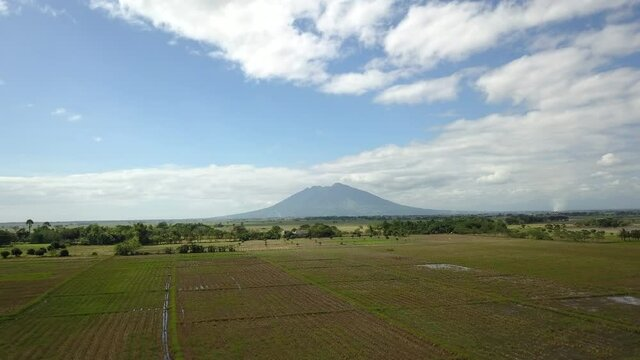
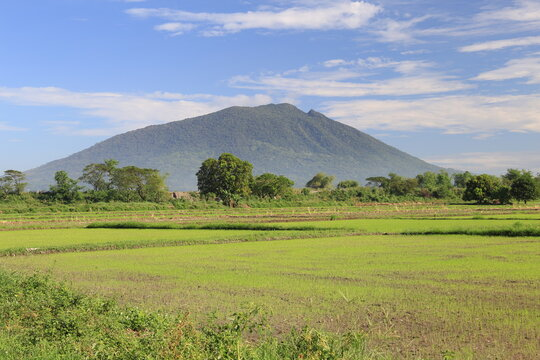
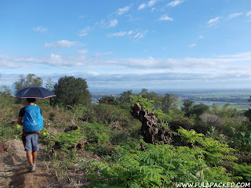
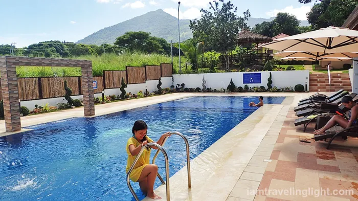
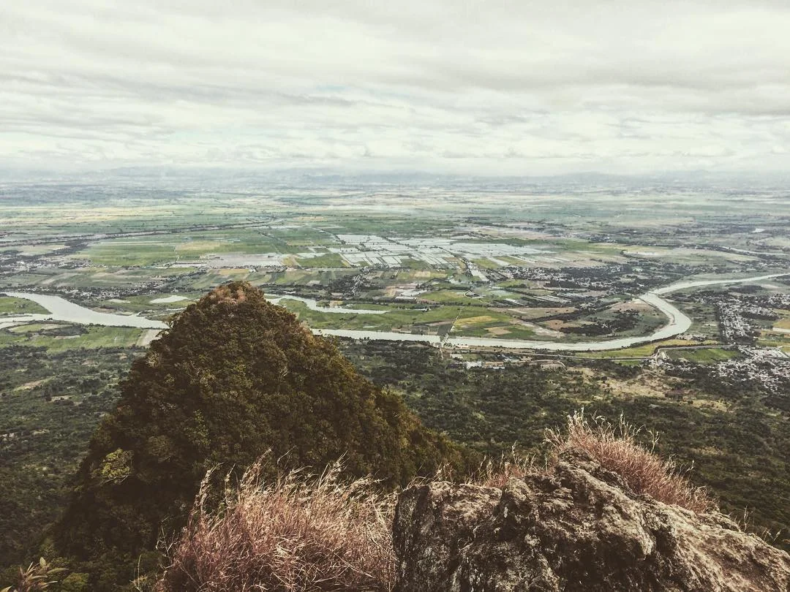
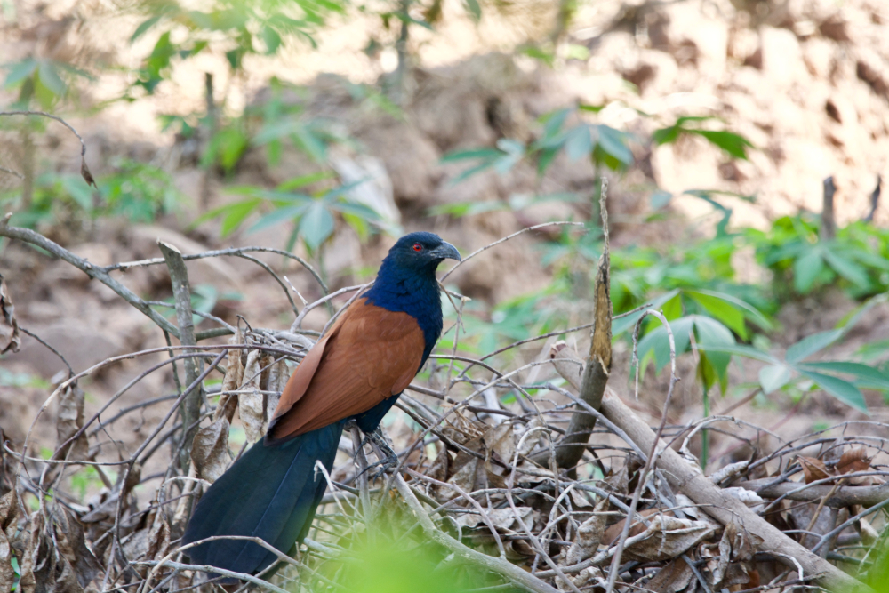

Pampanga's iconic dormant volcano and national park
National Park
Rising dramatically from the flat Central Luzon plains, Mount Arayat is a dormant stratovolcano standing at 1,026 meters above sea level. Declared a national park in 1933, it is one of Pampanga's most recognizable natural landmarks and a magnet for hikers and nature lovers.
The mountain is surrounded by lush forest, natural swimming pools fed by cold mountain springs, and picnic areas — making it a popular weekend escape for locals and tourists alike.





Mount Arayat National Park is located in Arayat, Pampanga — about 14 km from the city of San Fernando and approximately 80 km from Manila.